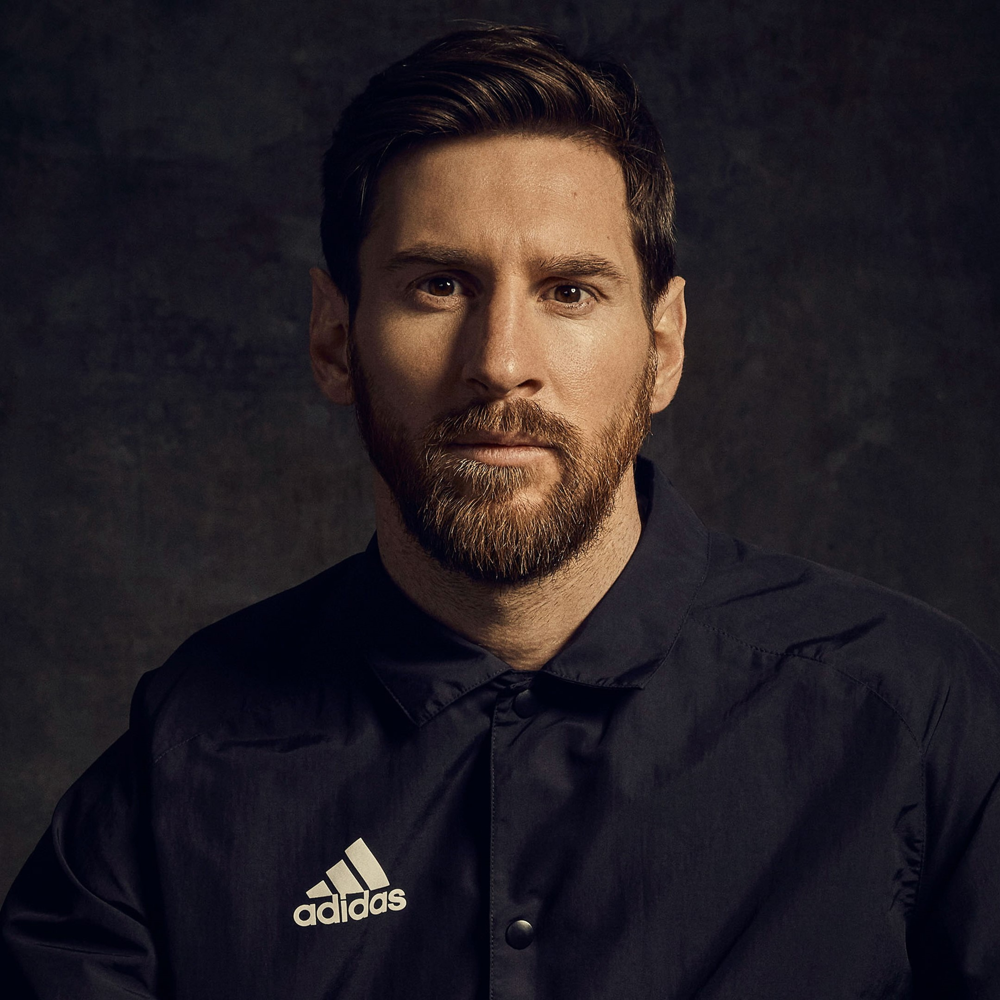

Lionel Andrés Messi“Every year I try to grow as
a player and not get stuck in a rut. I try to
improve my game in every way possible. ”
Biography

Lionel Messi is an Argentine football player widely considered to be
one of the greatest of all time. He rose to prominence playing for Barcelona, winning numerous titles and
breaking records. Messi has also had a successful international career, helping lead the Argentine national team
to the World Cup final in 2014. He has won seven Ballon d'Or awards and continues to inspire a new generation of
footballers with his exceptional talent and dedication to the sport.
Despite his success on the pitch, Messi has also faced challenges off the field, including struggles with
injuries and legal issues. However, he has remained dedicated to his sport and to his fans, and he continues to
be a beloved figure in the world of football.
Today, Messi remains one of the most recognizable and admired athletes in the world, known not just for his
exceptional talent but also for his humility, generosity, and sportsmanship. He continues to inspire a new
generation of footballers with his unwavering dedication to the sport and his relentless pursuit of excellence.